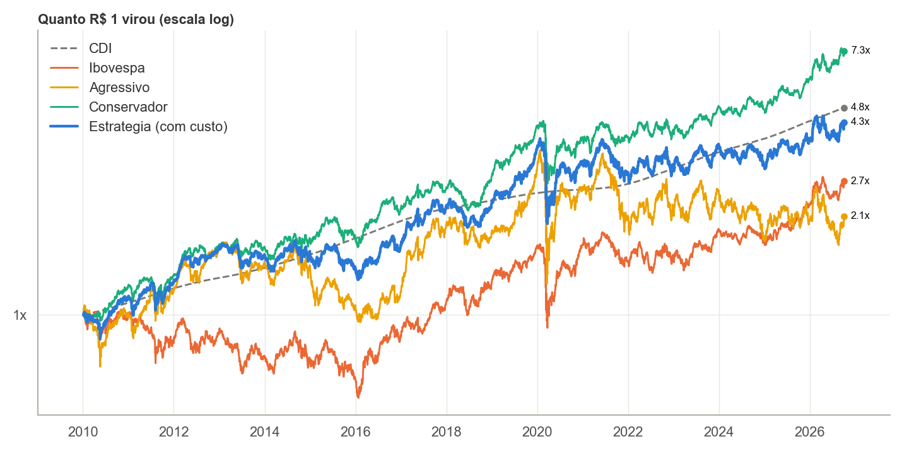
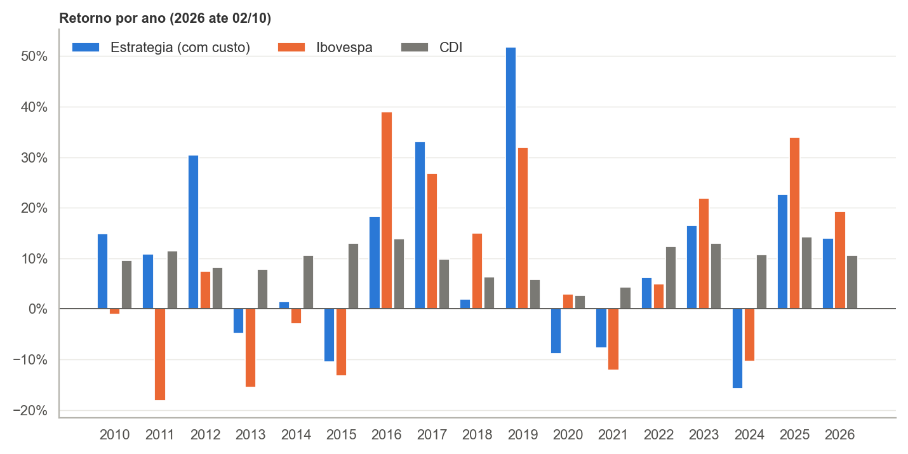
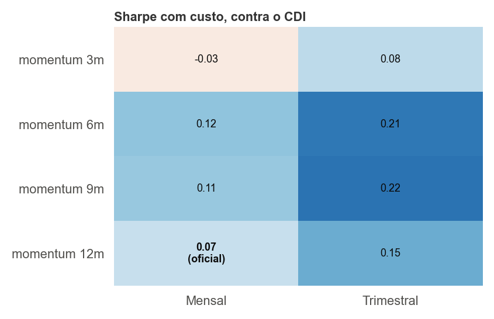

Uma estratégia de fatores na B3, de janeiro de 2010 a outubro de 2026: o que ela rendeu e, principalmente, por quê.
Use as setas do teclado, Page Down ou role a página.
As 15 ações com a melhor nota média entre ROE alto e volatilidade baixa nos últimos 12 meses. O ROE é usado com 90 dias de atraso, para só usar balanços já publicados. Troca a cada trimestre.
Das 30 menores empresas do universo, as 10 que mais subiram de 12 meses atrás até 1 mês atrás. Troca todo mês.

3Sharpe = retorno acima do CDI dividido pela volatilidade. Perto de zero quer dizer que o risco não foi pago.
Estratégia: 0,07. Conservador: 0,24. Ibovespa: −0,03.
Beta = quanto anda junto com o índice. Alfa = o que sobra por ano além do beta. IR = ganho sobre o índice dividido pela distância dele.
Estratégia: beta 0,75, alfa +1,9% ao ano, IR 0,18.
| Série | CAGR | Vol. | Pior queda | Sharpe | Beta | Alfa | IR |
|---|---|---|---|---|---|---|---|
| Estratégia com custo | 9,1% | 20,2% | −47,5% | 0,07 | 0,75 | +1,9% | 0,18 |
| Conservador | 12,6% | 17,0% | −37,8% | 0,24 | 0,62 | +4,5% | 0,37 |
| Agressivo | 4,6% | 28,8% | −63,6% | −0,03 | 0,95 | −0,1% | 0,00 |
| Ibovespa | 6,2% | 22,9% | −48,6% | −0,03 | 1,00 | — | — |
| CDI | 9,8% | 0,2% | 0,0% | — | — | — | — |
A diferença para o Ibovespa, em média por ano, quebrada em quatro partes:
Média simples dos 17 anos; a soma das partes é aproximada porque os retornos se compõem.
5| Fase | Estratégia | Conservador | Agressivo | Ibovespa | CDI | O que aconteceu |
|---|---|---|---|---|---|---|
| 2010–2013 | 12,2% | 13,8% | 10,6% | −7,4% | 9,3% | Ibovespa cai puxado pelas maiores empresas |
| 2014–2016 | 2,4% | 10,2% | −7,3% | 5,4% | 12,5% | Recessão, Selic acima de 14% |
| 2017–2019 | 27,3% | 22,7% | 35,9% | 24,5% | 7,3% | Juros caindo, bolsa subindo |
| 2020–2022 | −3,7% | −0,6% | −8,7% | −1,7% | 6,4% | Covid e Selic de 2% para quase 14% |
| 2023–2026 | 8,8% | 17,1% | −2,0% | 16,0% | 13,0% | Juros altos |
Retorno ao ano em cada fase. Verde: acima do CDI do período; vermelho: abaixo.

2026 vai até 2 de outubro.
7A estatística t do Sharpe é o Sharpe vezes a raiz dos anos de dados. O corte usual para dizer que não é só sorte é t = 2.
| Série | Sharpe | t | Anos de dados | Anos para t = 2 |
|---|---|---|---|---|
| Estratégia com custo | 0,07 | 0,28 | 16,7 | ~830 |
| Conservador | 0,24 | 0,97 | 16,7 | ~70 |
| Agressivo | −0,03 | −0,11 | 16,7 | — |
| Ibovespa | −0,03 | −0,13 | 16,7 | — |

| Cenário | Regra | Custo ao ano | CAGR | Sharpe |
|---|---|---|---|---|
| Sem custo | — | 0,00% | 9,86% | 0,11 |
| Custo oficial | 0,1% por rebalanceamento | 0,79% | 9,07% | 0,07 |
| Custo da aula | 0,2% sobre o que é trocado | 1,09% | 8,77% | 0,06 |
9,07% contra 9,79% ao ano, com 20% de volatilidade e queda de 47%. Num período em que nem a bolsa pagou o risco, carregar 75% do risco do mercado pesou.
+2,6 pontos por ano, quase tudo do bloco Conservador e do peso igual até 2019. Desde 2023 perde para o índice.
t = 0,28. Com 16,7 anos de dados e um Sharpe tão baixo, o resultado é compatível com acaso.
Todas as variações dão resultados parecidos e baixos; a oficial não é a melhor delas.
relatorio_quantstats.html).pip install -r requirements.txt e python backtest.py.